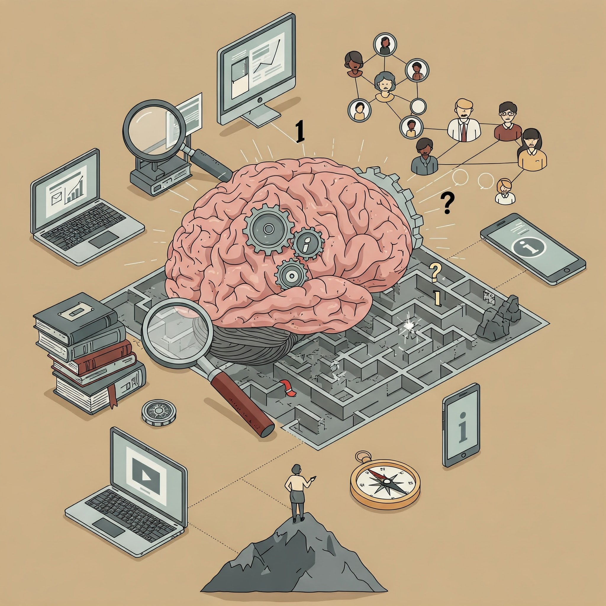

סיכום הרצאה 01 - מבוא לאוריינות מידע

הרצאה 01 - מבוא לאוריינות מידע
היי לכולם, מה נשמע? אני קרן, נעים להכיר וברוכים הבאים לקורס אוריינות מידע. הקורס הזה הוא קורס מתוקשב, כלומר ניפגש מרחוק באמצעות סרטונים. הסרטון הזה נועד להסביר כיצד יפעל הקורס, מהו המושג "אוריינות מידע" והמטרות שלנו.
מהי אוריינות מידע?
קרן הגדירה אוריינות מידע כיכולת לענות על שאלות הקשורות לצריכת מידע:
- "מה המידע שאנחנו מחפשים?"
- "איפה נמצא את המידע הדרוש לנו?"
- "מה משמעות המידע? איך נכון להבין אותו?"
- "איך נכון להציג ולהפיץ את המידע?"
במילים אחרות, אוריינות מידע היא היכולת לצרוך מידע באופן ממוקד, אחראי וביקורתי.
מטרות הקורס
קרן פירטה את המטרות הכלליות של לימוד אוריינות מידע, כולל דרישות לעבודת הסיום:
- שיפור מיומנויות דיגיטליות.
- פיתוח היכולת למצוא ולצרוך מידע באופן עצמאי.
- פיתוח חשיבה ביקורתית ופתרון בעיות בעבודה עם מידע.
- יישום מעשי: ניתוח שינויים בתחום נבחר בעידן הדיגיטלי, תוך שימוש במקורות אקדמיים וציטוטם על פי כללי APA.
- שיתוף פעולה: עבודת צוות בזוגות, שלשות או רבעיות.
- עמידה בזמנים: הגשת העבודה עד ה-12.3.2025
למידע נוסף על עבודת הסיום, בקרו ב-עמוד עבודת הסיום.
נושאי הקורס
במהלך הקורס ילמדו הנושאים הבאים:
- איך בני אדם צורכים מידע?
- הערכת מידע באופן מושכל.
- חשיבה ביקורתית.
- אוריינות מידע בעידן הדיגיטלי ומהפכת הבינה המלאכותית.
- אוריינות מידע בעולם האקדמיה והגישה המדעית.
- מבנה המאמר המדעי.
- כללי ציטוט מקובלים.
מיומנויות אקדמיות
קרן הדגישה את החשיבות של פיתוח מיומנויות אקדמיות, כגון:
- הטלת ספק וביקורתיות.
- פיתוח כישורים חדשים.
- ניהול זמן ואחריות אישית.

המעבר מבית הספר לאקדמיה דורש מהסטודנטים להפגין עצמאות, חשיבה ביקורתית והטלת ספק.
האינטרנט וחיי היומיום
קרן הזמינה את הסטודנטים לחשוב על משמעות האינטרנט בחייהם, וביקשה מהם להשלים את המשפט: "בלי אינטרנט בשנתיים האחרונות, לא הייתי...".
השימושים הנפוצים ביותר באינטרנט
קרן הציגה נתונים מתוך דו"ח של "דאטה פורטל" משנת 2023, המפרט את השימושים העיקריים של אנשים באינטרנט:
- מציאת מידע (במקום הראשון!).
- שמירת קשר עם חברים ומשפחה.
- התעדכנות באירועים חדשותיים.
- צפייה בסרטים ובסדרות.
- מחקר עצמאי על איך לעשות דברים.
- ועוד...
התלות במידע
קרן הדגימה את התלות שלנו באינטרנט ובמידע דרך דוגמאות מחיי היומיום, כגון מצבים שבהם אין קליטה סלולרית או תקלה ברשתות החברתיות.
דוגמאות:
- ניווט באמצעות אפליקציית ווייז: מה קורה כשהאפליקציה לא עובדת?
- תשלום באמצעות אפליקציות תשלום: מה עושים כשהאינטרנט לא זמין?
- תקשורת עם חברים ומשפחה באמצעות וואטסאפ: איך מתמודדים עם תקלה באפליקציה?
סוגי אוריינות מידע
קרן הסבירה כי אוריינות מידע הוא מושג רחב שניתן לחלק לתתי-סוגים:
- אוריינות מידע פוליטית.
- אוריינות מידע בריאותית.
- אוריינות מידע תקשורתית.
- אוריינות מידע אקדמית.
- ועוד...
דוגמה: אוריינות מידע בריאותית מתייחסת ליכולת להשיג, להבין ולהשתמש במידע בריאותי רלוונטי, כדי לקבל החלטות מושכלות.
עקרונות אוריינות מידע
לסיכום, קרן הדגישה כי אוריינות מידע מבוססת על עקרונות:
- שימוש נכון במקורות מידע.
- יכולת חיפוש ובחירת מידע אמין ורלוונטי.
- הפעלת חשיבה ביקורתית והערכה של המידע.
- יכולת לתקשר את המידע בצורה אפקטיבית.
לסיכום
ההרצאה הציגה את המושג "אוריינות מידע", את חשיבותו בעידן הדיגיטלי, ואת המטרות והנושאים שיילמדו בקורס. קרן הדגישה את הצורך בפיתוח חשיבה ביקורתית, עצמאות ואחריות אישית בלמידה, ואת התפקיד המרכזי של האינטרנט בחיינו.